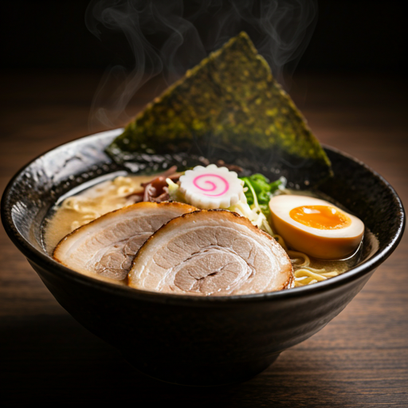
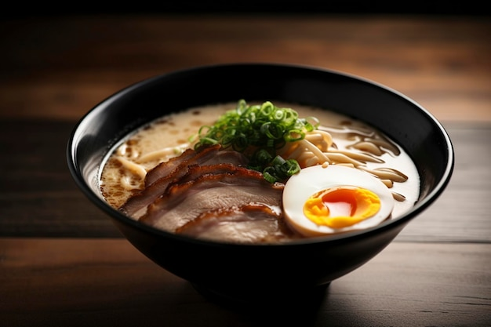
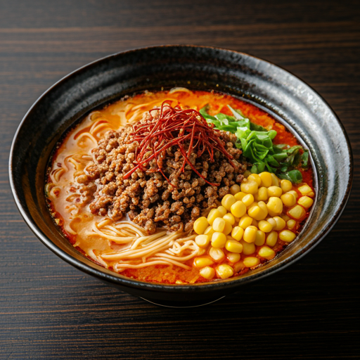
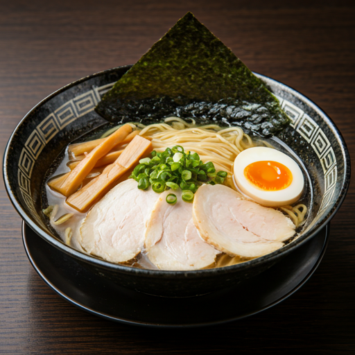
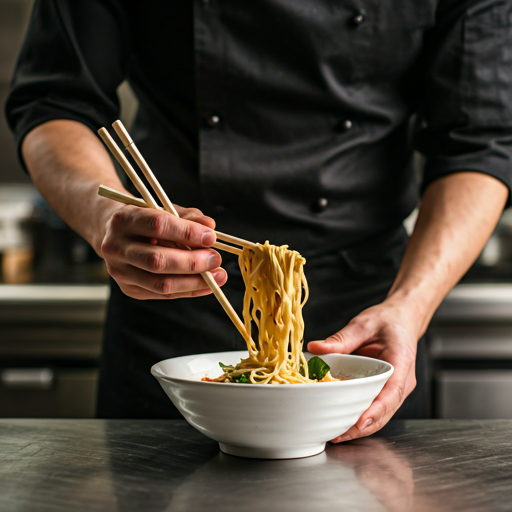

Authentic Japanese Ramen, Crafted with Precision
Perpaduan tradisi Jepang dan sentuhan lokal yang diolah dengan gaya modern, disajikan dengan cita rasa yang pas di lidah Indonesia.
Authentic Japanese Chef
Dipimpin langsung oleh Master Chef Kenji, menghadirkan lebih dari 20 tahun pengalaman kuliner Kyoto ke meja Anda.
Fresh Ingredients
Sayuran organik lokal berpadu dengan bahan pilihan yang diimpor langsung dari produsen terbaik Jepang.
Handcrafted Broth
Kaldu khas kami direbus perlahan selama 24 jam untuk menghasilkan rasa umami yang mendalam dan tekstur lembut.
Signature Creations

Aburi Beef Gyukotsu
68.0Kuah kaldu tulang sapi kental hasil rebusan 24 jam, disajikan dengan mie lurus dan irisan daging sapi yang dibakar.

Spicy Miso
Ramen dengan basis pasta miso pedas, topping daging cincang, jagung manis, dan telur rebus setengah matang.
58.0
Truffle Shoyu
Kuah kecap asin Jepang yang bening dengan aroma minyak jamur truffle, disajikan bersama irisan daging dan rebung.
75.0
20+
Years of Mastery
Taste Japan, Feel Home
Berawal dari kecintaan kami dengan mie khas Jepang, Shuka Ramen hadir buat kasih kamu pengalaman makan yang beda. Di sini, ramen bukan cuma soal kenyang, tetapi soal kualitas.
Semua bahan yang kita pakai, dipilih dengan teliti dan dimasak perlahan agar rasanya umami. Kami ingin kalian bisa merasakan dedikasi yang kita tuang di setiap mangkoknya.
Learn More arrow_forwardVoice of the Table
Shared moments from our community
"Kuah Signature Gyukotsu-nya juara banget! Kaldu sapinya berasa banget, gurih, dan creamy. Ini beneran senagih itu sih!"
Andini Putri
Influencer
"Ramen terbaik yang pernah saya coba. Suasananya nyaman banget! Terus Shoyu Truffle-nya beneran seenak itu di rasanya."
Budi Pekerti
Pelanggan Setia
"Tekstur mi-nya pas banget, kenyal dan nggak gampang lembek. Porsinya juga ngenyangin dengan topping daging yang nggak pelit. Wajib coba!"
Siti Fatimah
Food Vloggerr
Ready for a Culinary Journey?
Yuk, mampir dan rasakan perpaduan rasa yang pas dalam suasana yang nyaman. Meja kita cepat penuh, jadi pastikan kamu dapat tempat hari ini!